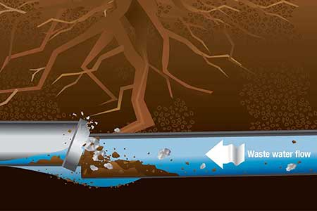

Drain MaintenanceTop 5 Signs Your Drains Need Professional Cleaning
That slow drain might be trying to tell you something. Learn the five warning signs that indicate it's time to stop using the plunger and call a professional drain technician.
Read More